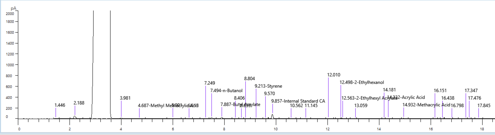
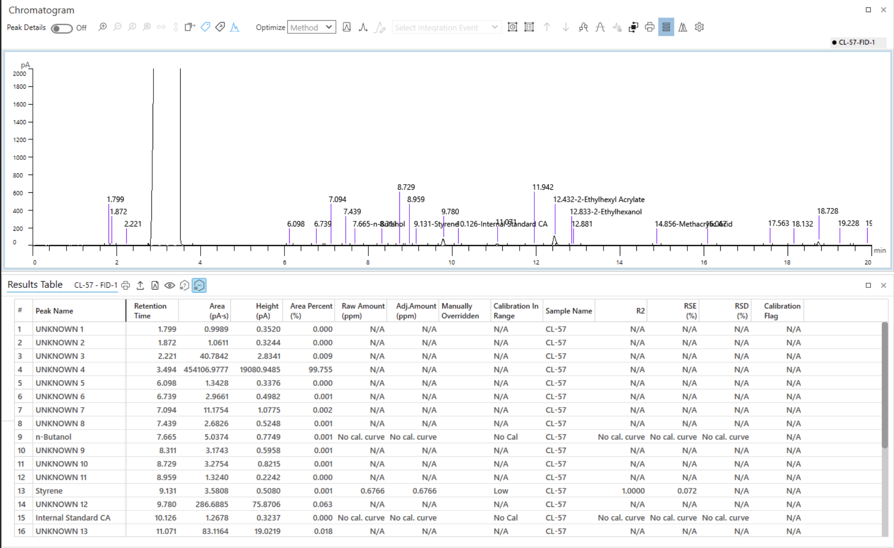

04.2.4
Gas chromatography works by vaporizing a liquid sample at a high temperature, around 250°C, or whatever temperature is needed to vaporize the specific sample. Each component then runs through a column, which works like an obstacle course. Components that move through quickly do not have a strong affinity for the coating inside the column, so they reach the detector fast. Components that interact heavily with the column coating take longer, which is why GC methods start at a low temperature like 40°C and gradually climb to 200°C or higher as the run progresses, forcing slower components through. The detector uses a flame, and components that are highly reactive produce a larger signal. One important limitation is that water cannot be detected using flame ionization detection, since water is not flammable.
04.2.5
During my internship, I ran the GC from start to finish on my own multiple times. I ran experiments adjusting conditions and comparing results across different samples. Running the GC gave me a strong understanding of heat-based separation and how to interpret what the machine was telling me through its output.
04.2.6

GC Image 1

GC Image 2

GC Image 3